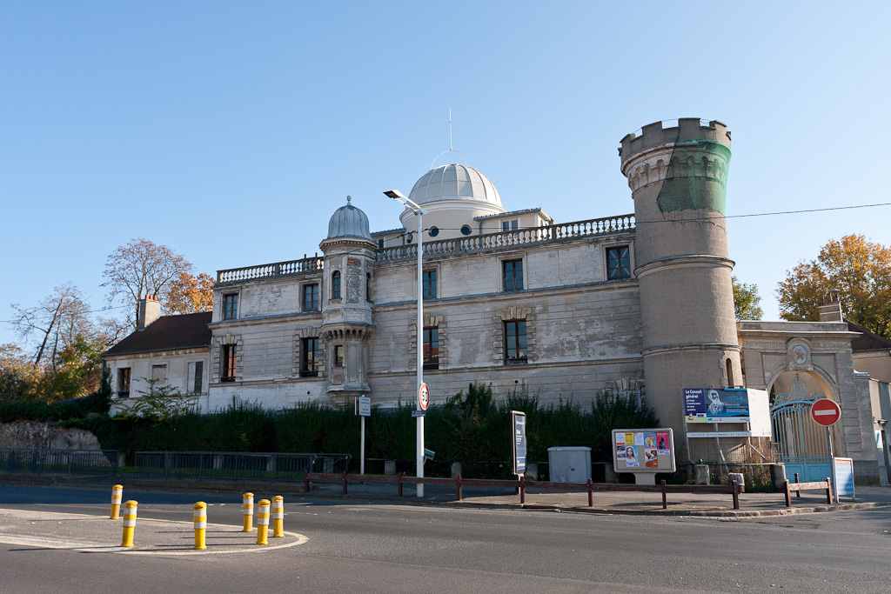
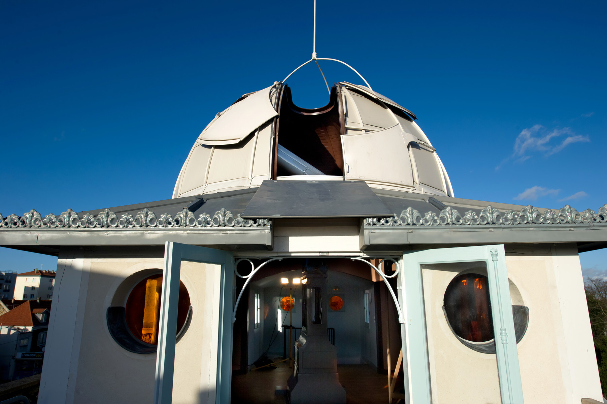
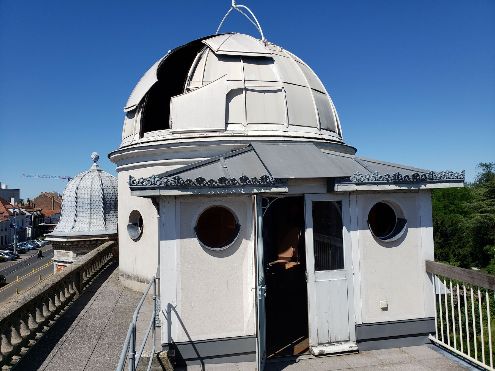
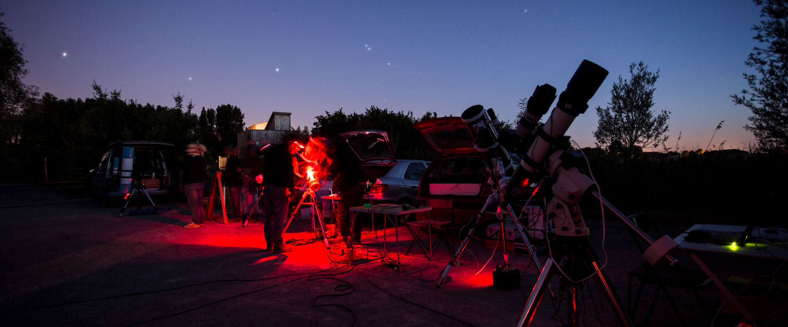

À propos de l'Observatoire
Découvrez l’histoire de l’Observatoire de Juvisy et de Camille Flammarion, ainsi que les débuts de l’astronomie moderne.
Visites guidées
Participez à nos visites guidées pour en apprendre plus sur l’astronomie et l’Observatoire.
Galerie de photos
Observez notre galerie et voyager dans l'Observatoire de Juvisy.

Événements
Découvrez nos événements à venir, incluant des conférences et des observations du ciel.
Club d'Astronomie
Rejoignez notre club pour partager et approfondir votre passion pour l'astronomie.
